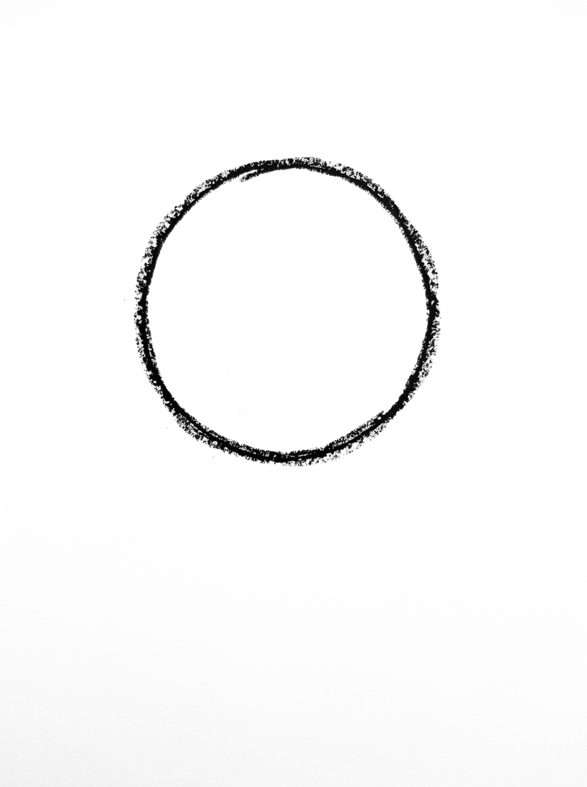
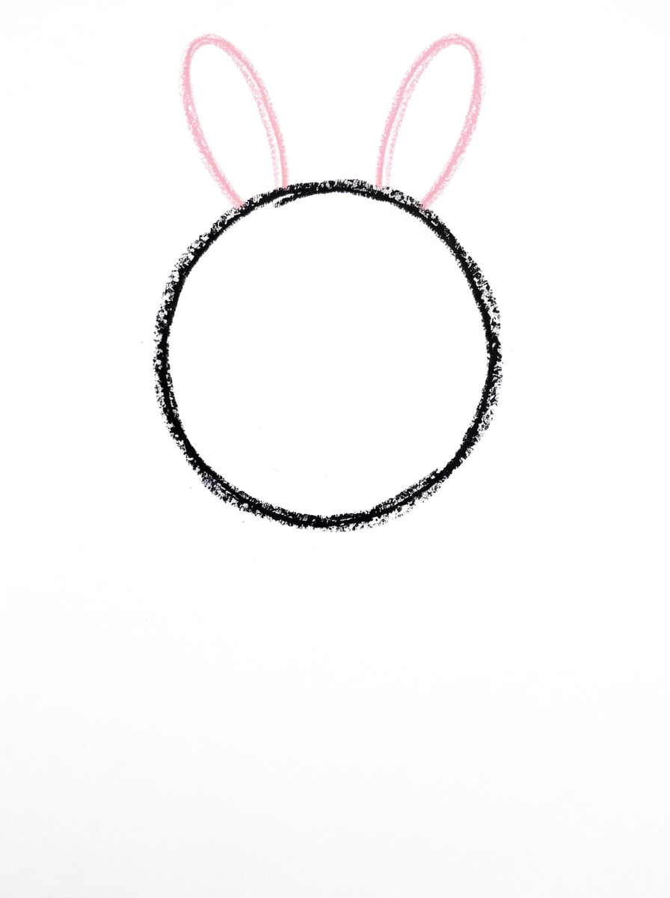
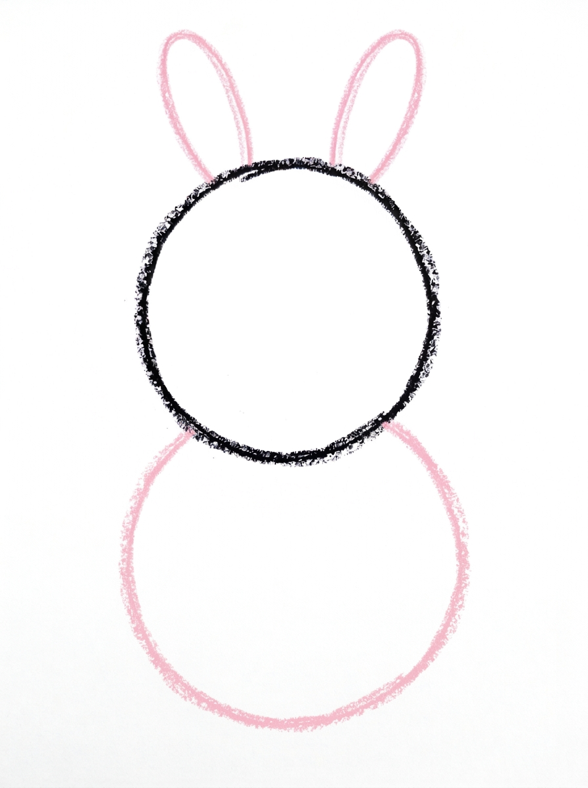
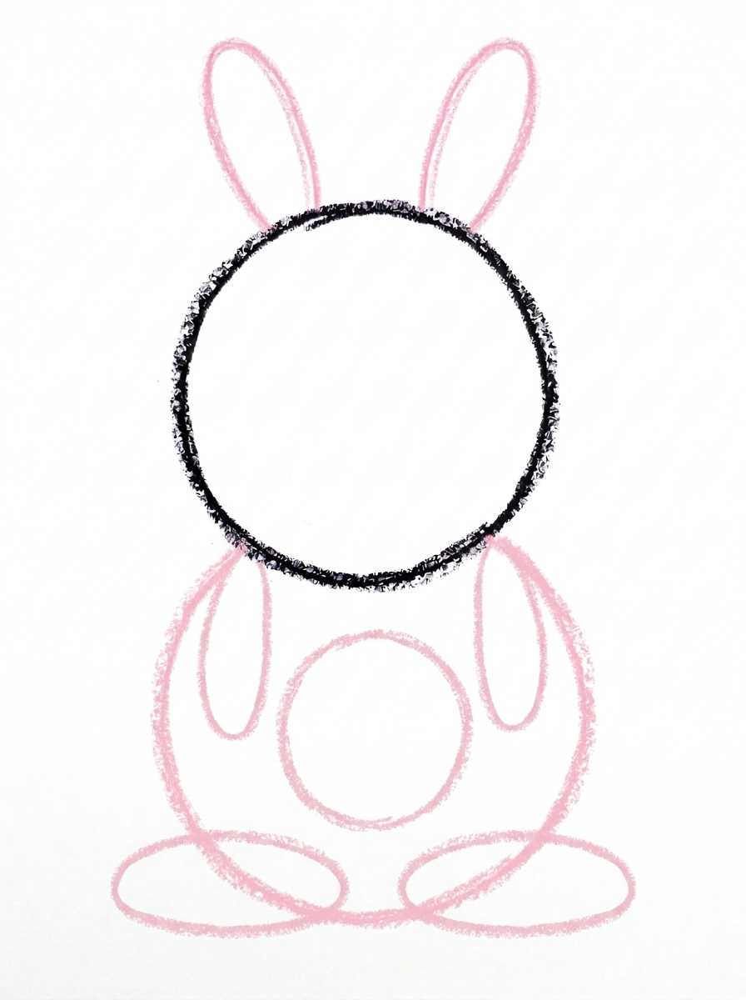
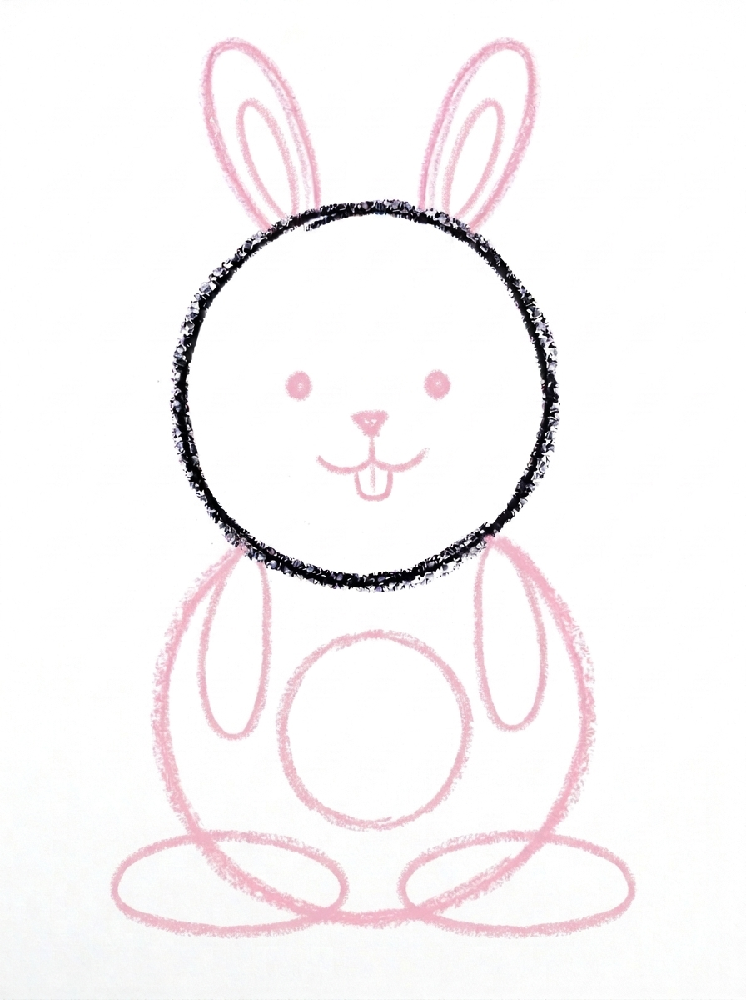
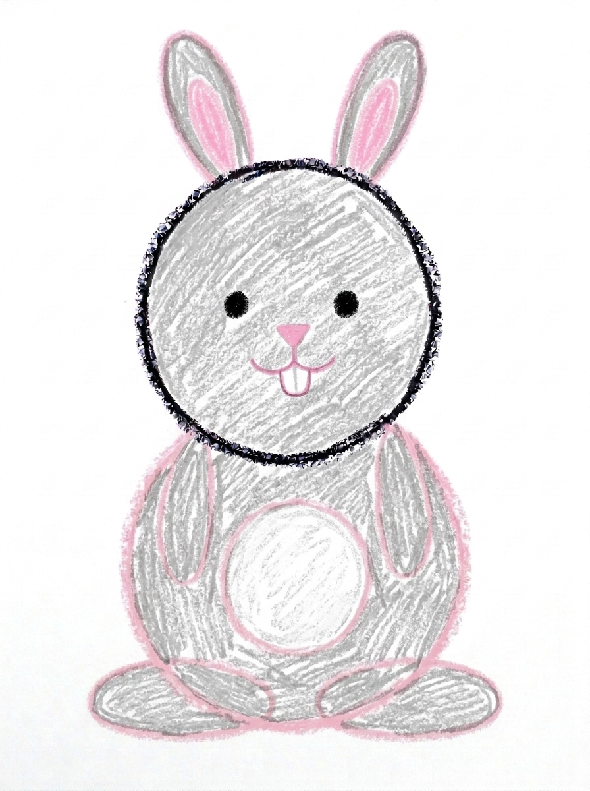

Rabbit Drawing for Kids How to Draw A Rabbit in 6 Easy Steps
Quick Answer
Draw a front-facing rabbit: one big circle for the head, two long ovals on top for the ears, a round oval body underneath, four legs — two front legs and two big back feet — plus a belly, then a face with a tiny tooth. Made for ages 3 and up — no signup needed, just print and draw.
At a Glance
- Subject: How to draw a rabbit
- Ages: 3+
- Steps: 6 steps
- Time: ~15 min
- Difficulty: Easy
- Supplies: Paper, crayons
This rabbit faces you head-on, which makes it one of the friendliest first animals to draw — a big circle head, two tall ears and a round body stacked up like a snowman. The face goes right inside the head, and it finishes with one tiny tooth that always gets a giggle.
✏️ Draw Your Rabbit in 6 Easy Steps
One step per box — this step by step rabbit drawing shows each new part in a different color so kids can see exactly what changed.
Step 1: The Head

Draw one big circle in the upper middle of your paper. This is the rabbit's head, facing you!
Step 2: The Ears

Draw two long, thin ovals standing on top of the head, side by side. These are the rabbit's ears.
Step 3: The Body

Draw one big round oval right under the head, touching it. This is the rabbit's body.
Step 4: The Legs and Belly

A rabbit has four legs! Draw two long ovals on the front of the body for the front legs, two big flat ovals at the bottom of the body for the back feet, and one round oval in the middle of the body for the belly.
Step 5: The Face

Draw the face inside the head: two round dot eyes, a tiny triangle nose in the middle, a little curved mouth under the nose, and one small tooth hanging under the mouth. Add one smaller oval inside each ear.
Step 6: Color It In

Color the head, body, ears and feet light gray, the belly and tooth white, the inside of the ears and the nose pink, and the eyes black. Great drawing!
📊 Rabbit Drawing by Age
Every age can join in — just adjust the job.
| Age | What they can do | Tip |
|---|---|---|
| 3-4 | Draw the head circle and the two long ear ovals, and stack the round body underneath with guidance. | Start the head high on the page — the body, four legs and big back feet all need the space below it. |
| 4-5 | Stack head, ears and body in order and add all four legs — two front legs and two big back feet — plus the belly. | Count the legs together at Step 4: rabbits have four, and the two big flat back feet are the ones kids most often forget. |
| 6+ | Draw the complete bunny alone, including the face, the little tooth and the inner-ear ovals. | Let them add a carrot, whiskers or a bow once the basic bunny feels easy. |
🖨️ Download Your Free Rabbit Drawing Printable
The printable lays out all 6 steps one per box, big enough for little hands — kids draw right alongside each step.
⬇️ Open Free Printable 🖨️ Print🎁 Free printable for ages 3+
🐰 Bunny and Carrot Patch
Every bunny needs a garden. Draw carrots around your finished rabbit — a triangle point-down with three short scribble lines on top for the leafy greens — plus grass strokes and maybe a fence. Count the harvest together: how many carrots did your bunny grow? Then give the bunny a name, write it under the picture, and try the hard mode: draw a second bunny facing the first, using the same six steps, so the two can share the carrot patch.
What You'll Need to Draw A Rabbit
You need paper, a pencil and crayons or markers in just four colors: light gray for the head, body, ears and feet, white for the belly and tooth, pink for the inside of the ears and the nose, and black for the eyes. If you plan to extend it into the carrot patch challenge, add orange and green to the pile before you start.
What They're Learning
This tutorial practices stacking circles and ovals in a vertical line — head over body — which builds early composition and page-planning skills (starting high enough to fit everything). The ears, eyes and legs work in matching pairs, giving a hands-on feel for symmetry, and Step 4 is an honest counting moment: a rabbit has four legs, drawn here as two front legs and two big back feet. The tiny triangle nose and single tooth add small-shape control at the end.
Make It Yours
Once the bunny is easy, play with it: bend one ear down for a floppy-eared rabbit, or color it brown, white or patched like a real pet. An Easter version can hold a decorated egg or sit among drawn eggs and flowers, and a bedtime version looks sweet with closed curved eyes and a moon. Drawing a whole bunny family — big, medium and tiny, all from the same six steps — is a lovely way to practice big and small.
🛒 Our Favorite Drawing Supplies
These are the supplies we reach for in our own home — washable (because kids), quality paper, and enough colors to avoid fights.
As an Amazon Associate, MomYouNeedThis earns from qualifying purchases — at no extra cost to you.
💡 Rabbit Drawing Tips for Parents
Two things make this bunny work, and both are worth a quick check before the coloring starts. First, the face belongs inside the head — eyes, nose, mouth and tooth all live within the Step 1 circle. Drawing the body before the face helps, because a finished stack stops kids from placing the face on the body or beside the head. Second, count the legs at Step 4: rabbits have four — two front legs on the body and two big flat back feet at the bottom — and two-legged bunnies are the most common slip in this tutorial.
Start the head high on the page. The number one practical problem with stacked drawings is running out of room at the bottom, and this one needs space for a body and two big feet under the head. If the feet do get squeezed, angle them out to the sides like a sitting bunny — it looks completely natural, because that is how rabbits actually sit.
🐰 Rabbits in the Real World
Rabbits are built for escape: strong back legs for sudden leaps, long ears that swivel toward danger, and eyes placed to see nearly all the way around. A happy rabbit sometimes leaps and twists in mid-air — a move rabbit people call a binky. Wild rabbits live in burrow systems called warrens; pet rabbits rule living rooms with the same confidence.
A rabbit's teeth never stop growing, which is why rabbits chew constantly — hay, twigs, and the occasional baseboard. The front tooth in this drawing is the famous one. Ask your child what their rabbit's favorite snack is; the answer is rarely the botanically correct 'hay,' and that is fine.
✋ Warm-Up: Ear Pairs
Warm up with ears: two long ovals side by side, then two more, then a pair with one flopped over. Rabbit ears are the whole silhouette — a page of pairs makes the tutorial's pair feel routine. Add quick whisker fans and tiny tooth rectangles for a full face-parts rehearsal at scrap-paper stakes.
One ear taller than the other is not a problem — rabbits constantly hold their ears at slightly different angles when they are listening to two things at once. The face step forgives even more: a tooth that lands off-center is just a goofy grin, and goofy grins are rabbit-approved.
📖 Give Your Rabbit a Story
Rabbits in stories are always quicker than they look. Is yours the warren's fastest, a garden thief with no regrets, or a pet awaiting a particular snack at a particular hour? A dictated sentence under the drawing sets the rabbit's reputation, and reputations invite sequels.
The carrot tutorial is this rabbit's reason for living. Drawing the carrot next closes the loop — predator and prize, gardener and thief, in two sittings and one ongoing negotiation. Hop further with the spring cousin in how to draw an easter bunny, and plant a snack from how to draw a carrot.
❓ Rabbit Drawing FAQs
What is the easiest way to draw a rabbit?
Draw it front-facing, stacked like a snowman: a big circle head, two long oval ears on top, a round oval body underneath, then four legs and a face inside the head. Facing forward means nothing hides in profile, which is why this version works so well for young kids — follow the six steps.
What age is this rabbit drawing for?
It is made for ages 3 and up. Three- and four-year-olds can manage the stacked circles and ovals with help placing the face, while older kids can finish all six steps, including the tiny tooth, by themselves.
What supplies do we need?
Paper and a pencil for drawing, plus crayons or markers for coloring: light gray, white, pink and black are the only colors needed. Carrot-orange is worth adding to the pile if your child wants to draw the bunny a snack.
Is the printable really free?
Yes — every printable on MomYouNeedThis is 100% free to download and print. No signup, no payment, just tap the download button.
How do I print it?
Open the free PDF and print it at 100% scale, not 'fit to page', so the step pictures come out at the size they were designed. One page is the whole tutorial, and you can print fresh copies whenever your child wants another try.
Why does this rabbit face forward instead of sideways?
Front-facing is easier for young children: the ears, eyes and nose all sit symmetrically on one big circle, and nothing has to be lined up in profile. It also guarantees the face lands inside the head, where it belongs, instead of floating beside it.
How many legs does the rabbit have in this tutorial?
Four, and Step 4 draws all of them: two long front legs on the front of the body and two big flat back feet at the bottom. Rabbits' powerful back feet are their most famous feature, so they get their own big ovals.
My child's head and body don't touch. What now?
They should touch, like a snowman's parts. If there is a gap, the easiest fix on the next try is to start the body oval higher so it overlaps the head circle a little. On the current page, a tiny drawn neck line or scarf hides the gap charmingly.
📚 Keep Exploring
- ✏️ All 76 Drawing Tutorials 76 free step-by-step drawing tutorials for kids.
- 🐾 Animal Coloring Free printable animal coloring pages for little learners.
- ✏️ Drawing Practice Free printable drawing pre-writing worksheet for toddlers.